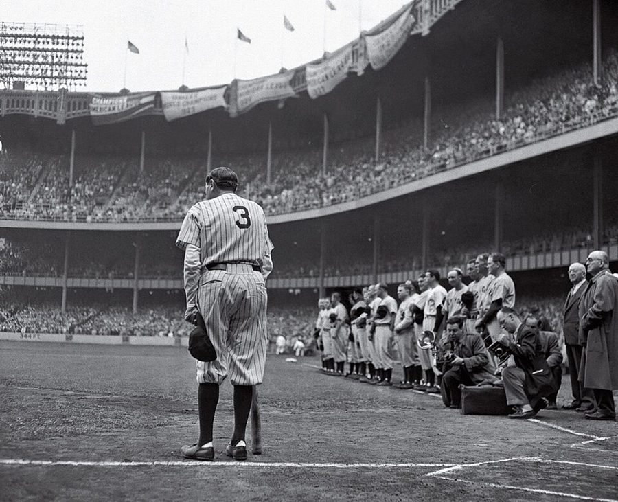
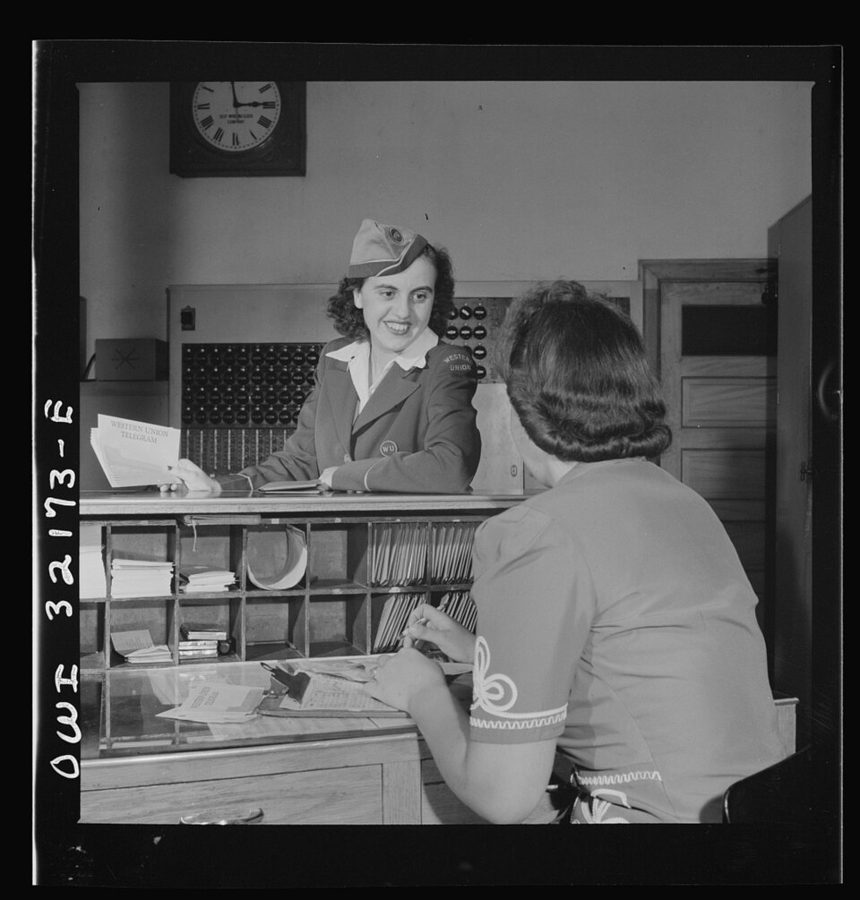

这一章在做什么
上一页结尾他考进了史岱文森。这一页从 1945 年 2 月到 1948 年 1 月，十四岁到十七岁，仍住哈莱姆。三年一路往下：跟不上课、停学、送电报、和 Mom 闹上法庭，最后提着一只纸板箱离家。
中间有两处亮色：棒球，和一位来访的「表姐」。读的时候盯住两条线：书为什么读不下去，Mom 手里的权力怎样一步步落空。
出场的人
这一页有名字的新人只有两个，其余都是用职务叫的：the truant officer、the super、the policeman、the magistrate。听的时候按职务分清就行。
Mom即第 1 章的 Mama养母。这一页里她是对手：扔他的画具，叫警察，告到法庭，对两边说两套话。
Birdie、Lacy、RuthMom 的两个女儿和女婿都站在 Mom 一边，认为他糟蹋了他们没得到过的机会。叫醒他见客的是 Ruth。
Rosen 和 Valdez男，初中同学上一页的两个伙伴，一起进了史岱文森的快班。只在开头提一句。
Shirley女，童年玩伴这一章前面认识的那个假小子，住新泽西的 East Orange。他没打招呼就去找她看电影，家里又吵一场。
Creole/ˈkriːoʊl/，女，已婚Ruth 的朋友。带他看了第一场大联盟比赛，借书给他。Mom 疑心她别有用意。
the “super”和他的妻子公寓楼的管理员夫妇。想把他接去同住，被 Mom 一口回绝。
the truant officer/ˈtruːənt/，男专管逃学的教育局官员。面冷心善，劝他转去容易些的学校。
the policeman男Mom 叫来的警察。碰巧是他送杂货的老主顾，也是他唯一认识的警察。
the magistrate/ˈmædʒɪstreɪt/，男治安法官。先单独听 Mom 说，再叫他进去，完全站在 Mom 一边。
Mary Frances女，从华盛顿来星期天上午来访的漂亮姑娘，Mom 介绍说是表姐。她的真实身份在这一节的最后一段。
my aunt 就是 Mom。第 28 节法庭那一段起，法官和作者都改口说 your aunt / my aunt，没有换人：这时收养的事已经说破，Mom 在法律上只是他的长辈亲戚。
她对法官说他是「我死去的姐妹的孩子」，作者纠正说其实是孙辈。这和第 1 章对得上：Mom 是他亲祖母的姐妹。
背景：作者默认你知道的事
史岱文森高中，和去那里的路
 东 15 街 345 号的史岱文森老校舍，摄于 2010 年。作者上学时每天来的就是这座楼，学校后来迁走了。
Beyond My Ken，CC BY-SA 4.0，维基共享资源
东 15 街 345 号的史岱文森老校舍，摄于 2010 年。作者上学时每天来的就是这座楼，学校后来迁走了。
Beyond My Ken，CC BY-SA 4.0，维基共享资源
Stuyvesant /ˈstaɪvəsənt/ High School，1904 年建校，纽约市的公立重点高中，偏重数理，不看住在哪个学区，全市凭考试录取，免学费。当时只收男生，1969 年才招女生。
书里说它 on shifts：学生太多，分上下午两班倒，所以他上午过半才出门，傍晚高峰回家。
本站示意图。粗线是上学的路，按书里说的两次换车画；其余圆点是这一页提到的别的地点。
曼哈顿是南北向的长岛，街号越大越靠北。家在 145 街，学校在 15 街，中间隔着整个中城。Sugar Hill 是哈莱姆西北的高地，当时黑人中产和名流住的地方，他星期六在那里给人送杂货。
十六岁以前不能不上学
美国各州有义务教育法，规定必须上学到某个年龄，当时纽约是十六岁。学生无故旷课叫 truant，教育局有专人上门查，俗称 truant officer。
所以学校提议给他一套「注水」的课表，只求把他留在名册上、拖到十六岁生日。过了那一天，他自己签个字就能合法离校，书里叫 sign myself out。
棒球场上的几个词
本站示意图。内场是个菱形，所以球场叫 diamond。第 25 节那一球：他从本垒打出的平直球，擦着正弯腰接地滚球的游击手耳边飞过去。
棒球两队轮流攻守。攻方一个个上来击球，顺序表叫 line-up；第四个上场的叫 clean-up，照例排队里打得最重的人，指望他一棒把垒上的队友全送回本垒。
一个瘦瘦的黑人少年被排在一队白人壮汉的第四棒，对方投手才会笑。
1940 年代的大联盟

1948 年 6 月 13 日，洋基体育场，贝比·鲁斯（Babe Ruth）的 3 号球衣退役仪式。这是作者离家五个月之后的事，球场就是 Creole 带他去的那一座。
Nathaniel Fein，公有领域，维基共享资源
Major league 是职业棒球的最高一级。洋基队的主场在布朗克斯，和哈莱姆只隔一条河。那时收音机里有逐球解说，男孩子人人会背球员的数据。
1947 年 4 月，杰基·罗宾逊（Jackie Robinson）才打破大联盟的肤色界线。街区球场上各族裔的队伍混着打，比职业棒球早。
送电报的人

1943 年 6 月，华盛顿，一位西联（Western Union）投递员在柜台领一叠要送的电报。作者三年后做的就是这份工作。
Esther Bubley，公有领域，维基共享资源
长途电话又贵又少的年代，急事靠电报：在电报局按字数付钱，对方城市的电报局收到后打印成条，由穿制服的投递员（messenger）走路或骑车送上门。
西联是全美最大的电报公司。这是不要学历的入门工作，多半由十几岁的男孩做。
治安法官和「不服管教的未成年人」
Magistrate 是最低一级的法官，一个人审轻微案件，没有陪审团，常在自己的办公室（chambers）里谈话。当时美国的成年年龄是 21 岁，不是 18 岁。
Wayward minor 是纽约州法律里的一个类别，针对十六岁以上、不服家长管教的未成年人，法官可以判监管，也可以送进 reform school（少年管教所）。Mom 手里的牌就是这个。
留个记号：后面还会回来
第 1 章埋下的一条线在这一页接上了，另外有三处是作者自己加了重音的。
他不知道自己是收养的第 27、28 节第 1 章第 1 节留的问题，答案在这里。作者没有正面写得知的那一刻：第 27 节末尾说「几个月后」，第 28 节法庭上只用破折号里的半句话带过。留意他把这件事写得多轻。
Mary Frances第 27 节他说当时没有理由认为还会再见到她。记住这个名字，和她是从华盛顿来的。
离开学校的分量第 26 节刚离校时是松一口气，随后他说这个决定的后果像一块新的重物慢慢压下来。这件事他后面还要处理很久。
切尔西的穷白人第 26 节他头一回见到不识字的白人，用了 my first realization 这个说法。本站的看法：他后来写族群和贫困时反复比较各个群体，这里是书中最早的一次亲眼所见。
词与短语
词条按书里出现的顺序排，小标题是原书用 • • • 隔开的各节。斜体小字是那句话里的几个词，在 Kindle 里搜它就能跳到那一句。单个的生词长按就能查，这里收的主要是词典帮不上忙的。
第 24 节 · 史岱文森的第一个学期
a cut above
… also clearly a cut above what …
比……高出一档
cut 这里是「等级」。
margin for anything to go wrong
… no margin for anything to go …
出一点岔子的余地
margin = 余量。这半句是伏笔，下面岔子一个接一个。
on shifts
… Stuyvesant was on shifts, so I …
分班次上课
shift 是工厂的「班」。学校两班倒，他上的是晚的那一班。
pass out
… were to pass out in that …
晕过去
不是「分发」。整句是玩笑：车里挤到人晕了都倒不下去。
get under way
… in time to get under way again. …
又动身出发
原是船起航。
on a treadmill around the clock
… on a treadmill around the clock. …
一天二十四小时踩在转轮上
treadmill 那时指踩踏的转轮，引申为没完没了的苦差。around the clock = 昼夜不停。
barely cover
… this barely covered my subway fare …
刚够付
cover 用在钱上 = 够支付。
invidious comparisons
… Invidious comparisons were inevitable—and frequent. …
招人不痛快的比较
读 /ɪnˈvɪdiəs/。指家里拿他和隔壁天天挣钱的男孩比。破折号后面补的 and frequent 是他的冷幽默。
in the abstract
… the family understood—in the abstract—that Stuyvesant …
道理上（明白）
言下之意：落到具体的日子里就不明白了。
a living soul
… not know a living soul who …
一个活人（都不认识）
soul = 人，只用在否定句里。
set off another round of
… set off another round of recriminations …
又引爆一轮（互相指责）
recriminations：你怪我、我怪你。all around = 人人有份。第 28 节原样又出现一次。
flouting of authority
… This flouting of authority provoked another …
公然不把大人的权威当回事
flout /flaʊt/ 是藐视，别和 flaunt（炫耀）混。把看场电影说得这么重，是在学家里人的口气。
as if all this were not enough
… As if all this were not enough, …
这还不算完
固定的起句，后面一定是更糟的事。
stay out
… I began staying out, even when …
不去上学
不是「在外面不回家」，是 stay out of school。
resign myself to
… and resigned myself to taking the …
认了，只好接受
和辞职无关。
take the term over
… taking the term over again in …
把这学期重读一遍
over = 重新。term 是学期。
第 25 节 · 棒球
play-by-play
… listening to play-by-play descriptions on the …
逐球实况解说
play 是场上的一个回合。
change of pace
… a welcome change of pace from …
换换节奏，换个口味
本身就是棒球话：投手忽然投一个慢球。
diamond
… the two diamonds on the field. …
棒球场
内场是菱形。见上面的图。
on the spur of the moment
… on the spur of the moment …
临时起意
spur 是马刺。
permit
… often had official permits to use …
（公园发的）场地使用许可
名词，重音在前 /ˈpɜːrmɪt/。这一节的冲突全系在这张纸上。
short-handed
… if they were short-handed. …
人手不够
hand = 人手。
fill in
… I was filling in on an …
临时顶替
不是「填表」。industrial team 是同一行业的工人组的球队。
bat clean-up
… black teenager batting clean-up in a …
打第四棒
见上面「棒球场上的几个词」。beefy = 膀大腰圆。
color-blind
… everything was harmonious and color-blind, but …
不看肤色
不是色盲。这个词后来成了美国种族政策争论里的关键词。
spics
… to let these spics beat us, …
对拉美裔的蔑称
侮辱性很强，只认不用。作者照录是为了说明：各队私下都这么讲，只是不当面讲。
at the plate
… I was at the plate batting, …
站在本垒上（击球）
plate 是本垒那块板，不是盘子。
line drive
… I hit a line drive straight …
平直球
又快又平、几乎贴着直线飞的球，打在人身上很重。他是先用手示意投手球投在哪儿，再瞄着打的。
field
… the ground for him to field. …
接（滚过来的）球
field 作动词：守备方接球处理。
livid
… He looked up, livid, and charged …
气得脸色铁青
charge at = 朝人冲过去。
turn him loose
… “Turn him loose,” I said. …
放开他
下一句是挑衅：不放，他还以为有人怕他。
back where I come from
… that way, back where I come …
在我老家那边
他带南方口音。意思是：在南方，黑人这样对白人说话是要出事的。见第 1 章的背景。
you may not get back
… “And you may not get back.” …
你未必回得去
接着对方的 back 回一句威胁。全书里他少有的当面讲狠话的地方。
cooler heads prevailed
… Cooler heads prevailed when someone went …
冷静的人占了上风
成语，说一场要打起来的架被劝住了。
with our heads up
… field, but with our heads up. …
昂着头
场地照样让了，让法不一样。对比前面队友 sullenly（憋着气）往外走。
第 26 节 · 离开学校，送电报
en masse
… had been promoted en masse, as …
整班一起
法语，读 /ˌɑːn ˈmæs/，听书时像 on mass。promoted 是升级，第 1 章讲过。
left back
… would need to be left back. …
留级
美国学校的说法，也说 held back。
windfall gain
… promotion as a windfall gain. …
白捡的便宜
windfall 本义是风吹落的果子。这是经济学术语，写书时的经济学家替十五岁的自己用的。
wear them down
… My persistence finally wore them down, …
把他们磨得让了步
prerequisites
… this opportunity had prerequisites which were …
先决条件
大学里指「先修课」。这句是他的核心辩词：机会要有安静念书的条件才算机会，而条件正被家里的吵闹毁掉。
enter the picture
… the truant officer entered the picture. …
登场，掺和进来
truant officer 见上面「十六岁以前不能不上学」。
crusty
… a stern and crusty man, but …
脾气硬、说话冲
本义是有硬壳的。多用来说外硬内软的老头，后半句正是这个意思。
couldn’t bring myself to
… I couldn’t bring myself to do …
怎么也下不了决心去做
同一段末尾又用一次，那一次是说不出口。
watered-down
… a special watered-down program, at least …
注了水的，降了难度的
on the books in good standing
… on the books in good standing …
名字留在册上、不算违规
in good standing：资格正常的成员。学校要的只是账面上过得去。
read sinister meanings into
… immediately read sinister meanings into her …
往坏处揣测
read A into B：从 B 里读出本来没有的 A。
the “super”
… buildings that the “super” ran. …
公寓楼管理员
superintendent 的简称，纽约人天天说的词：住在楼里，管锅炉、垃圾、修理。
would not hear of it
… she would not hear of it. …
提都不许提
was not about to
… She was not about to relinquish …
绝不肯
否定式不是「不打算马上」，是「休想让我」。上一页他不肯上台领奖用的也是它。
sign myself out of school
… to sign myself out of school. …
自己签字办离校
满十六岁不必家长同意。
Western Union messenger
… as a Western Union messenger, delivering …
西联电报投递员
year-around（现在多写 year-round）= 一年到头的，和暑假工相对。
tough all over
… life is tough all over. …
到哪儿日子都不好过
all over = 到处，不是「结束」。It’s tough all over 是句口头禅。
trying experiences
… the winter were trying experiences—and experiences …
熬人的经历
trying 作形容词：磨人的，和「尝试」无关。
push-button knife
… to carry a push-button knife, which …
弹簧刀
一按就弹出刀刃，也叫 switchblade。
第 27 节 · 星期天上午的客人
had better be on fire
… “The house had better be on fire.” …
最好是房子着火了（不然别叫我）
had better 带威胁：最好如此，否则没完。
I am not going to argue
… I am not going to argue.” …
我可不去纠正她
玩笑：漂亮姑娘说认识我，认错了我也认。
passing through town
… “She’s passing through town and stopped …
路过本市
stop by = 顺道来坐坐。这整句是 Mom 编的说法，读完本节回头再看。
personable
… was a personable and sincere young …
招人喜欢的，待人亲切的
不是 personal。
exchange pleasantries
… doing and we exchanged pleasantries. …
说了几句客套话
pleasantries 是寒暄，不是「开心事」。
the truth came out
… before the truth finally came out: …
真相才露出来
冒号后面连着两句只差一个词的话，是全章的转折。谁说破的、怎么说破的，他没写。
第 28 节 · 法庭和纸板箱
grasping at a straw
… drowning man grasping at a straw, …
抓救命稻草
straw 是麦秆。下一段还有一根 straw，意思不同。
commercial art
… taking a commercial art course to …
商业美术（广告画、插图）
是一门能谋生的手艺，和「纯艺术」相对。
the last straw
… That was the last straw. …
压垮骆驼的最后一根稻草
忍到头了。两段之内两个 straw 成语，是有意的。
reform school
… put in a reform school if …
少年管教所
名字叫学校，其实是关押少年犯的地方。cesspool 本义是化粪池。
billy club
… and clenching his billy club as …
警棍
美国口语，警察巡逻时带的短木棍。
over-play her hand
… could not resist over-playing her hand. …
把戏演过了头
打牌的说法：高估手里的牌，出得太狠。
in his business
… bad boys in his business. …
干他这一行
business = 行当。又是往轻里说：警察见过的坏孩子多了，这话唬不住他。
was not through with
… Mom was not through with trying …
还没完，不肯罢手
through = 做完了。
disorderly conduct
… answer charges of disorderly conduct. …
扰乱治安（的行为）
美国最轻、最笼统的罪名之一。answer charges = 到庭应诉。传他到庭的那张纸叫 summons（传票），带 s 的是单数。
burden of proof
… the burden of proof was on …
举证责任
谁告谁举证。十七岁的他以为法庭是个讲这个的地方。
chambers
… called into the magistrate’s chambers, however, …
法官的办公室
不是「房间们」。不公开开庭，关起门来谈。
lean on
… to lean on me to bring …
对……施压
不是「依靠」。bring 某人 back into line：逼他重新守规矩。
it was downhill
… From there on, it was downhill. …
往后越谈越糟
下坡在这里是变坏，不是变容易。
wayward minor
… simply changed to “wayward minor,” which …
不服管教的未成年人
见上面的背景。后半句是讽刺：这罪名大概什么都能装。
lay down the law
… He was laying down the law. …
发号施令，不容分说
成语本来和法律无关，用在法官身上成了双关。
lay in
… I laid in a large supply …
囤积
囤罐头是摆给人看的：我准备打持久战（a long siege，长期围城）。
lest
… canned goods, lest anyone doubt that …
免得（有人不信）
很书面的词，后面跟原形动词。
buy it
… effect—and the magistrate bought it all. …
信了
buy = 相信（一套说辞）。下一段 Birdie 他们也 bought 了相反的那一套。
not the person to discover it
… probably not the person to discover …
反正我不是那个找得到（委婉说法）的人
自嘲：我这人不会拐弯。全书他一再这样说自己。
come down to
… all came down to a test …
归根到底是
a test of wills：看谁先撑不住。
crack
… “Until someone cracks,” I said. …
撑不住，垮掉
Mom 的问话里 gonna = going to，书里照口语写的。
sanctimonious
… She tried being sanctimonious as I …
摆出一副道貌岸然的样子
读 /ˌsæŋktɪˈmoʊniəs/。
turn on her
… away, but I turned on her. …
猛地回头冲她发作
turn on 某人：突然翻脸攻击，不是「打开」。
tongue-lashing
… launched into a tongue-lashing that left …
一顿臭骂
lash 是鞭打。
leave nothing to the imagination
… that left nothing to the imagination. …
话说得一点不留余地
通常形容衣服太暴露，这里借来说骂得明明白白。骂了什么他没写。
you had better not miss
… you had better not miss.” …
你最好别扔偏
和第 27 节开头那句 had better 是同一个句式，分量差了很远。
under age
… “You’re still under age,” he warned. …
未成年
当时 21 岁成年。
room with us
… lady who was rooming with us …
在我们家租一间房住
room 作动词。哈莱姆人家常把多余的房间分租出去，这一章开头他和 Mom 也这样住过别人家。
her place to say anything
… was her place to say anything. …
轮不轮得到她开口
place = 本分、身份。
if she doesn’t notice it herself
… she doesn’t notice it herself.” …
要是她自己没发现的话
全章最后一句，还是破折号后面补一刀的句式。
值得停下来的句子
It was my first realization that life is tough all over.— 第 26 节，在切尔西给不识字的白人移民念电报之后。本站译：我头一回明白，日子到哪儿都不好过。
主句是过去时，that 后面却用现在时 is：他把这当成一条到今天还成立的道理来说。在此之前他见过的白人是老师、同学和雇主，都比他家境好。
这一句只有十一个词，没有展开。本站的看法：读过他后来的书的人会认出这个角度，但在这里它只是一个十六岁电报投递员的见闻，先按见闻读。
It was now very clear to me that there was only one person in the world I could depend on—myself.— 第 28 节，走出法官办公室之后。本站译：这下我看清楚了，世上我能靠的只有一个人：我自己。
破折号把答案压到最后一个词。注意它的位置：前一段他刚发现法官不问谁对谁错，只讲谁有权。紧接着这句的是一套冷静的办法，法律没规定的事一件不做。
情绪只占一句，后面全是策略。他十七岁时处理冲突的方式，已经是后面各章里的样子。
检查一下理解
先在心里答，再点开。答错的那题，回书里把那一节再读（或再听）一遍。
1. 秋季开学时学校让他直接升了一级，这是奖励吗？他为什么不要？
不是奖励。他所在的快班被整班升级，只是校方图省事，默认这个班没人需要留级。他春天缺了大半学期的课，认为没学的东西后面要用，坚持退回去重读。校方嫌麻烦，被他磨到让步。
2. 他在史岱文森读不下去，是因为功课太难吗？
校方是这么认为的，他不认。按他的说法，原因是通勤累、只能周六打工、中途病了几周，而最要紧的是家里没完没了的争吵让他没法念书。他没有把家里的事告诉学校，因为不信任那些人。
3. 棒球场上那支白人球队到底有没有场地许可？最后是谁让了场？
有。公园管理员出面证实之后，作者这一队安静地离开了。他争的不是场地归谁，是对方一句话不说、不出示许可就占场，当他们不存在。
4. Mom 介绍的「从华盛顿来的表姐 Mary Frances」是谁？为什么这样介绍？
是他的亲姐姐。她是专程来找他的，不是路过。Mom 的条件是只能以表姐的名义见面，否则不让见，因为他这时还不知道自己是收养的。
5. Mom 叫来的警察站在谁一边？
没有站在 Mom 一边。他进门时握着警棍，认出作者是给自己送杂货的那个孩子，就把人单独叫出来问明情况，然后告诉 Mom 这不归警察管。真正偏向 Mom 的是后来的治安法官。
6. 开庭之后他不交家用、连杂货都不帮着提，是赌气吗？1948 年 1 月法官又为什么放他走？
是算好的办法。法官说 Mom 有权不放他走，他就只做法律强制他做的事，逼 Mom 自己同意。僵了几个月，Mom 先松口，法官才说「她刚同意了」。放他走的不是法官改了看法，是 Mom 撑不住了。